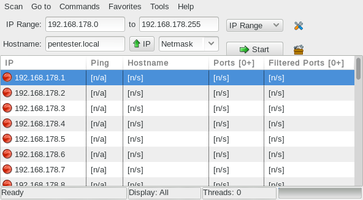
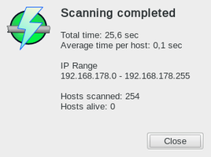
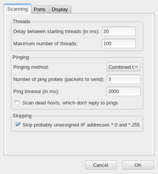
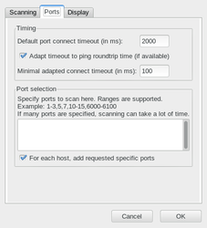
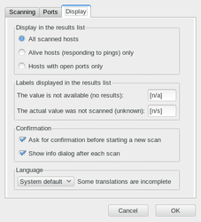

Angry IP Scanner
Dieser Artikel wurde für die folgenden Ubuntu-Versionen getestet:
Ubuntu 14.04 Trusty Tahr
Zum Verständnis dieses Artikels sind folgende Seiten hilfreich:
Ein Terminal öffnen, optional
Root-Rechte erlangen, optional
Einen Programmstarter erstellen, optional
Der Angry IP Scanner  oder kurz ipscan ist ein klassischer Portscanner mit einer einfachen grafischen Oberfläche. Das englischsprachige Programm basiert auf Java und kann daher plattformübergreifend unter Linux, Windows und Mac OS X eingesetzt werden (teilweise existieren auch native Versionen). Hervorzuheben ist besonders die Geschwindigkeit, mit der es den Netzwerkstatus prüfen kann.
oder kurz ipscan ist ein klassischer Portscanner mit einer einfachen grafischen Oberfläche. Das englischsprachige Programm basiert auf Java und kann daher plattformübergreifend unter Linux, Windows und Mac OS X eingesetzt werden (teilweise existieren auch native Versionen). Hervorzuheben ist besonders die Geschwindigkeit, mit der es den Netzwerkstatus prüfen kann.
Voraussetzungen¶
Die Installation einer Java-Laufzeit-Umgebung (JRE) in der Version 6 oder höher ist unter Linux zwingende Voraussetzung zur Nutzung des Programms.
Installation¶
 Das Programm ist nicht in den offiziellen Paketquellen enthalten.
Das Programm ist nicht in den offiziellen Paketquellen enthalten.
Fremdpaket¶
Über die Projektseite kann ein Fremdpaket  heruntergeladen und manuell installiert [1] werden.
heruntergeladen und manuell installiert [1] werden.
Hinweis!
Fremdpakete können das System gefährden.
Manuell¶
Über SourceForge kann eine .jar-Datei heruntergeladen werden. Diese lässt sich auch ohne feste Installation nutzen [2]:
java -jar ipscan-linux-VERSION.jar
Um den Befehl etwas abzukürzen, erstellt man mit Root-Rechten [3] die Datei /usr/local/bin/ipscan:
1 2 | #!/bin/sh java -jar /PFAD/ZU/ipscan*.jar "$@" |
und macht diese ausführbar. Einen Programmstarter [4] muss man bei Bedarf ebenfalls selbst erstellen. Beispiel (Benutzername, Pfade und Dateinamen anpassen!):
[Desktop Entry] Encoding=UTF-8 Name=Angry IP Scanner Comment=Fast and friendly network scanner GenericName=Fast and friendly network scanner Exec=java -jar /home/BENUTZERNAME/bin/ipscan-linux-VERSION.jar Icon=/home/BENUTZERNAME/Bilder/icons/ipscan_logo.png Terminal=false Type=Application Categories=Application;Network;Internet; StartupWMClass=Angry IP Scanner StartupNotify=true
Verwendung¶
Wird das Fremdpaket installiert, kann das Programm bei Ubuntu-Varianten mit einem Anwendungsmenü über den Eintrag "Internet -> Angry IP Scanner" gestartet werden [5].
In der Grundeinstellung erfolgt nur eine Analyse, welche Rechner via ping erreichbar sind. Interessant im Sinne eines Portscans wird es erst, wenn man in den Einstellungen unter "Ports" einen Bereich angibt, in dem nach offenen Ports gesucht werden soll (z.B. die Ports 0 - 1023; siehe auch Portzuordnung).
| Hoststatus: | inaktiv | aktiv, offene Ports | aktiv, keine offenen Ports |
Um die Ausgabe übersichtlicher zu gestalten, kann man zusätzlich unter "Display" angeben, dass nur als aktiv gefundene Rechner (alive hosts) angezeigt werden. Die Scan-Ergebnisse des Programms lassen sich als CSV-, TXT-, XML- oder als IP-Port-LST-Datei exportieren.
|  |
| Portscan des lokalen Netzwerks |
|  |
| Zusammenfassung |
Einstellungen¶
Die Einstellungen sind über "Tools -> Preferences" zugänglich und in drei Abschnitte unterteilt:
"Scanning" - Erkennungsmethode, wann ein Rechner als aktiv gilt
"Ports" - Angabe des Bereichs, in dem nach offenen Ports gesucht werden soll; Timeout-Zeit
"Display" - Auswahl der anzuzeigenden Rechner etc.
Die Konfigurationsdaten werden im Ordner ~/.java/.userPrefs/ipscan/ gespeichert.
|  |
| Scanning |
|  |
| Ports |
|  |
| Display |
Links¶
FAQ
- häufige Fragen und Antworten
Angry IP Scanner – Geräte im Netzwerk suchen
 - TecChannel, 08/2014
- TecChannel, 08/2014Portscan
 Übersichtsartikel
Übersichtsartikel
- Erstellt mit Inyoka
-
 2004 – 2017 ubuntuusers.de • Einige Rechte vorbehalten
2004 – 2017 ubuntuusers.de • Einige Rechte vorbehalten
Lizenz • Kontakt • Datenschutz • Impressum • Serverstatus -
Serverhousing gespendet von